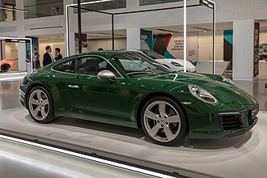

Porsche 911-ის მოდელის სერია (წარმოითქმის როგორც Nine Eleven ან გერმანულად : Neunhundertelf , ან სასაუბროდ Neunelfer ) არის ორკარიანი, მაღალი ხარისხის უკანა ძრავიანი სპორტული მანქანების ოჯახი , რომელიც 1964 წლის სექტემბერში გერმანიის ქალაქ შტუტგარტის Porsche- მ წარადგინა და ამჟამად მერვე თაობაშია. ყველა 911-ს აქვს უკანა მხარეს დამონტაჟებული ბრტყელი ექვსცილინდრიანი ძრავა და, როგორც წესი, 2+2 სავარძელი , გარდა სპეციალური 2-ადგილიანი ვარიანტებისა. თავდაპირველად, 911-ებს ჰქონდათ ჰაერით გაგრილებადი ძრავები და ბრუნვითი ღეროს საკიდარი , მაგრამ 911 მუდმივად იხვეწებოდა და თაობების განმავლობაში ვითარდებოდა. მიუხედავად იმისა, რომ 911-ის ძირითადი კონცეფცია ძირითადად უცვლელი დარჩა, [ 1 ] წყლით გაგრილებადი ძრავები 996 სერიასთან ერთად 1998 წელს გამოჩნდა , [ 2 ] [ 3 ] წინა და უკანა საკიდარი შეიცვალა Porsche-სთვის სპეციფიკური MacPherson-ის საკიდარით წინ და დამოუკიდებელი მრავალბმულიანი უკანა საკიდარით.
